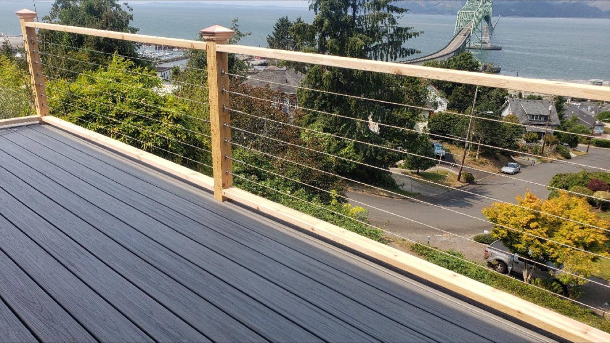
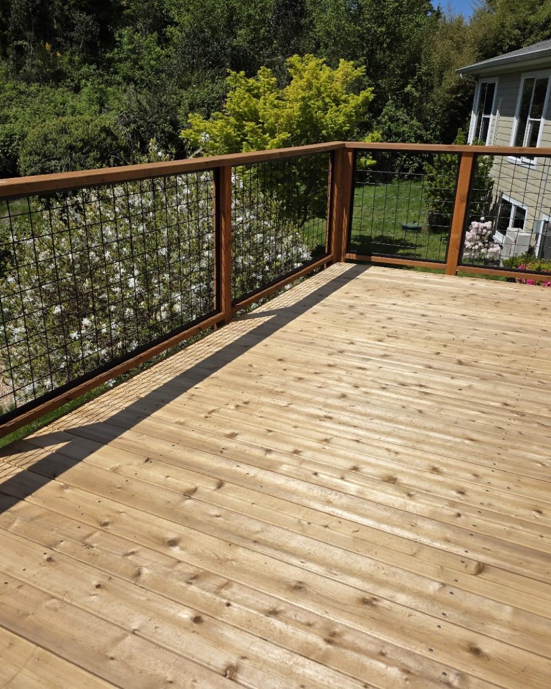
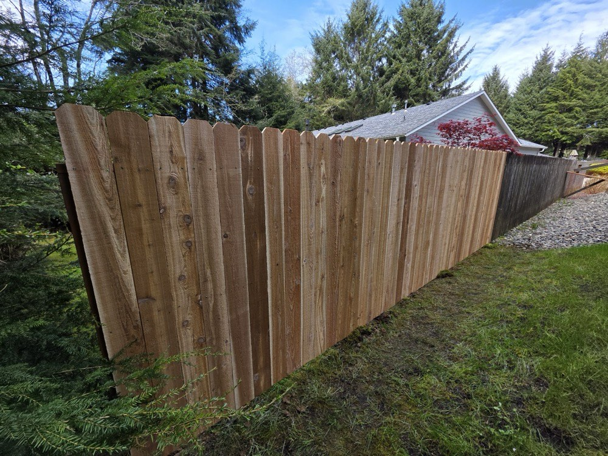
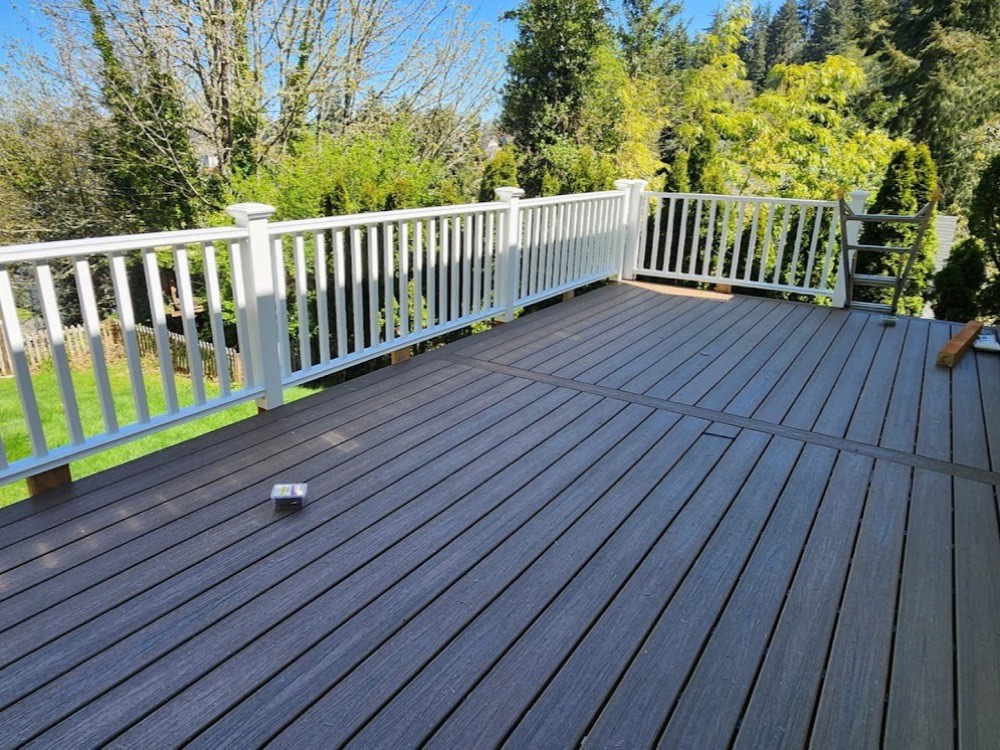
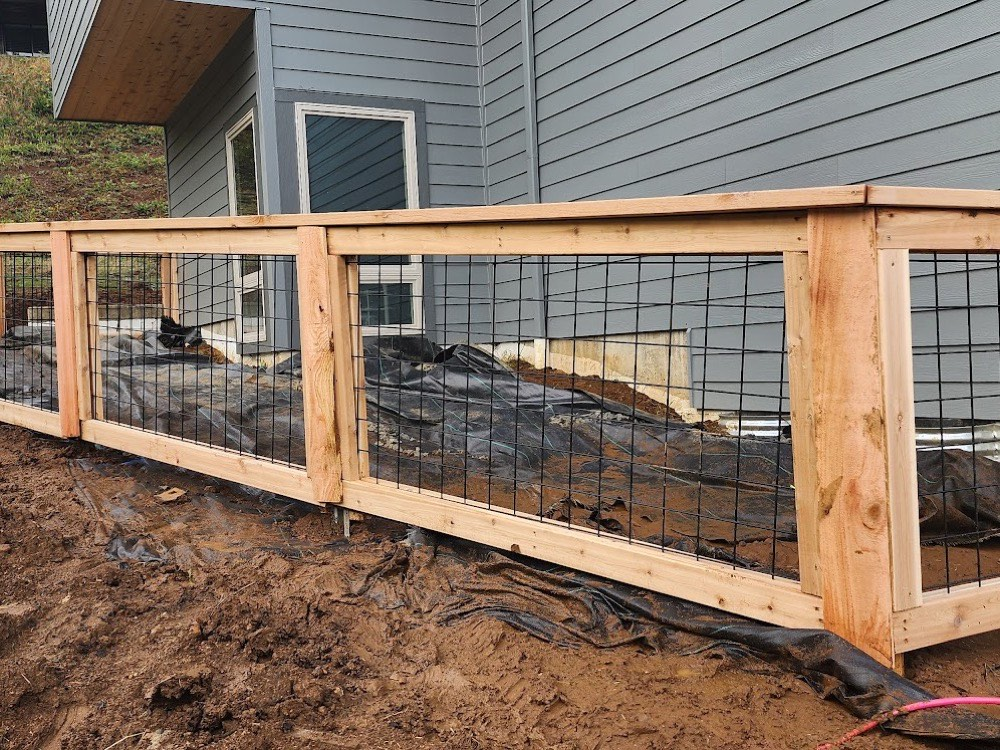
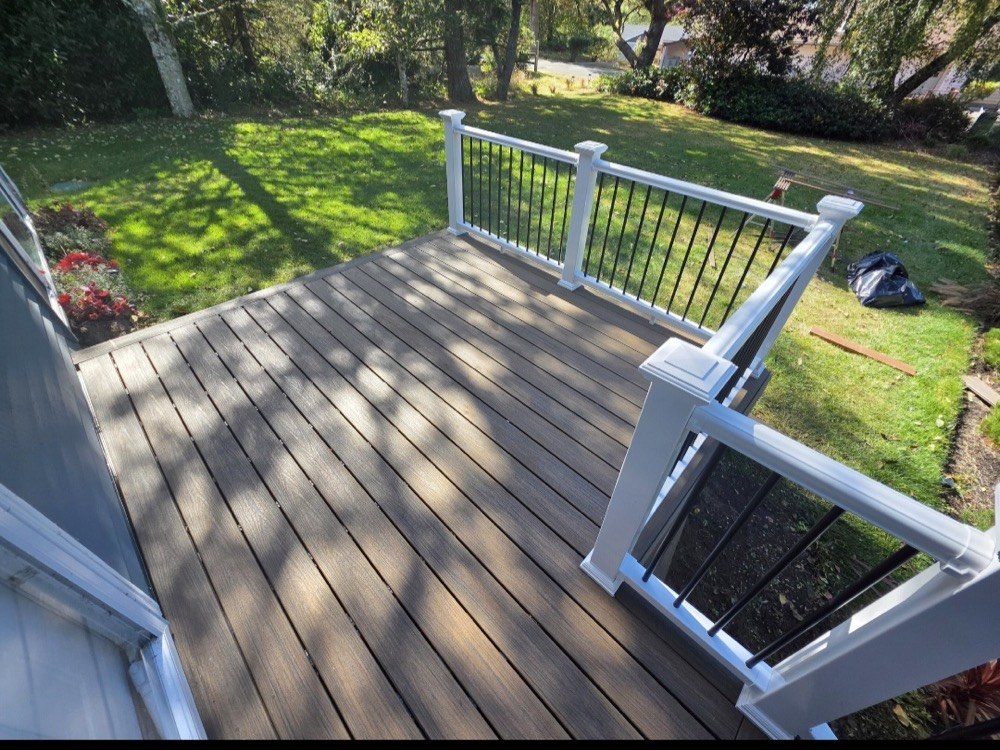
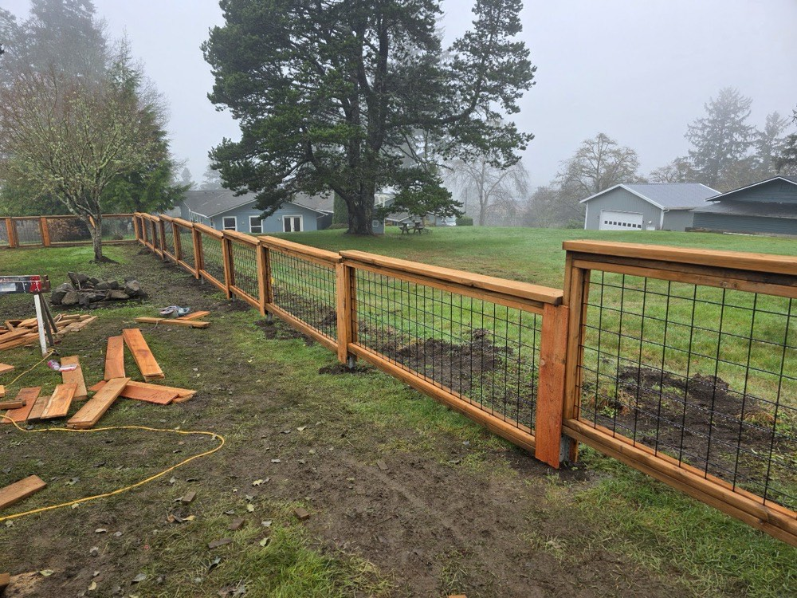
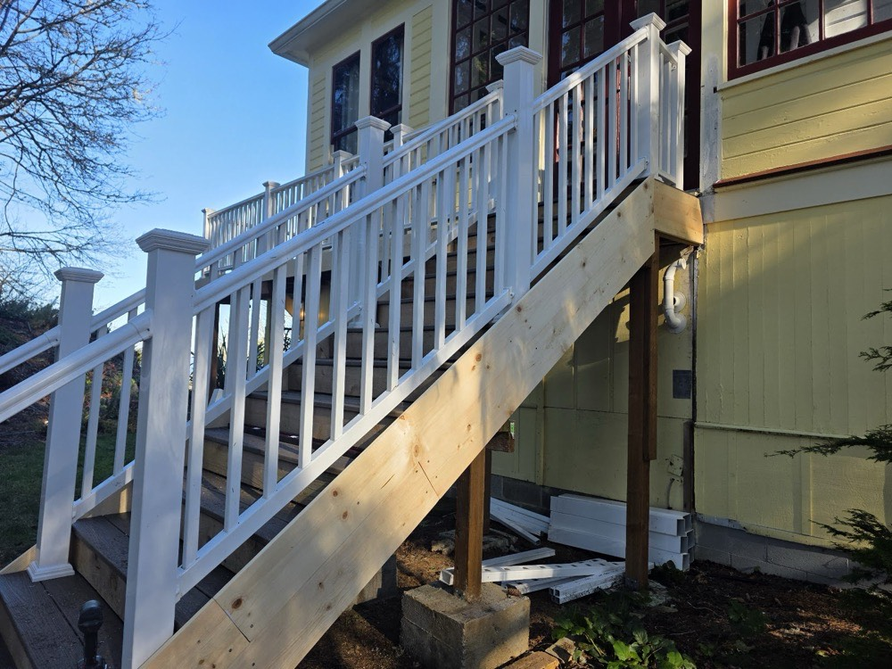

Custom Wood & Cedar Privacy Fences
Solid-board cedar and wood privacy fencing built to your layout — posts set for the long haul, boards lined up clean, made to give you real privacy.
Cowan Custom Finishing builds custom cedar fences and decks across Warrenton, Astoria and the North Coast — engineered to hold a sloping yard and stand up to coastal wind, and finished to a standard the neighbors notice.

Every project is built for the property it sits on — the right materials, set deep and square, so it holds the line for years on coastal ground.
Solid-board cedar and wood privacy fencing built to your layout — posts set for the long haul, boards lined up clean, made to give you real privacy.
Sloping, uneven or difficult ground is where build quality shows. We step and rack fence lines to the grade so the finished run looks intentional, not patched.
Matching wood and cedar gates, built square and hung so they latch every time and don't sag — the part of a fence you touch most.
Cedar and composite decks with cable, wood or panel railings — designed for the view and built to enjoy through the coastal seasons.
Cedar post-and-rail and welded-wire fencing for larger lots and acreage — open, durable, and finished with the same care as our privacy work.
Sections knocked down by wind or worn out over time — repaired or rebuilt to match, so your fence line is whole again.

On the coast, a fence or deck has to handle slopes, wet ground and real wind. We build for those conditions from the ground up — and our customers tell us they feel the difference.
No cookie-cutter panels dropped in a line. We build each fence and deck to the layout, grade and look of your yard.
Posts set deep, lines racked to the grade and framing built to take coastal weather — so it stays solid and standing.
A lot of our work comes from word of mouth — 39 Google reviews and a 4.5-star rating from coast homeowners who liked what they got.
We walk the project, talk through materials and give you a straight estimate — so you know what you're getting before we start.
Amber and LaNae just built a custom fence for our gently sloping backyard. This fence is not only beautiful but it is so sturdy and well built that we have no fears of it ever blowing over.★★★★★ Caren Lindahl · Google review
Call or send a quick request. We'll come look at the property and the grade, and talk through what you have in mind.
We help you choose cedar, wood or composite and a style that fits your yard, then give you a clear, written estimate.
Posts set, lines racked to the slope, boards and railings hung clean — built on site to handle the coast.
We walk the finished fence or deck with you, clean up the site, and make sure you're happy with the work.
A few real reviews, straight from our Google Business Profile — 4.5 stars across 39 reviews.
"Amber and LaNae just built a custom fence for our gently sloping backyard. This fence is not only beautiful but it is so sturdy and well built that we have no fears of it ever blowing over."
"We had Cowan Custom Finishing out to repair/rebuild a few sections of fallen fence in our back yard. These gals did PHENOMENAL work."
Across 39 Google reviews, Cowan Custom Finishing holds a 4.5-star rating from homeowners around Warrenton and the North Oregon Coast. Read them all on Google and see the work for yourself.
Real projects we've built around Warrenton and Astoria — every photo here is our own work.






Based in Warrenton, we build fences and decks across Clatsop County and the North Coast communities.
Not sure if you're in our area? Give us a call — we're happy to let you know.
Cowan Custom Finishing is a locally owned fence and deck builder on the North Oregon Coast, based right in Warrenton. We build custom — cedar privacy fences, ranch and wire-mesh fencing, gates, and decks — for the slopes, soil and weather of the coast.
The work speaks through our customers. One Warrenton homeowner wrote that the custom fence we built for her gently sloping backyard is "so sturdy and well built that we have no fears of it ever blowing over." Another called a fallen-fence rebuild "phenomenal work."
From a single privacy fence to a deck built around the view, we'd be glad to build something you're proud of — and that holds up year after year.
Request your free estimateYes — it's some of our favorite work. We step and rack the fence line to follow the grade so the finished run looks clean and intentional, and stays solid on uneven ground.
That's how we build. Posts are set deep, framing is built for the conditions, and our customers tell us the result is a fence they don't worry about in a storm.
We build custom cedar and wood privacy fencing, cedar post-and-rail and welded-wire ranch fencing, and matching gates. We'll help you pick the right material for your property and budget.
Yes. Along with fencing we build custom cedar and composite decks with cable, wood or panel railings — designed around your space and the view.
We do. Whether wind took down a few sections or an old fence has worn out, we'll repair or rebuild it to match so the whole line is whole again.
Call us at (503) 791-7473 or send the quick request form on this page. We'll come look at the project and give you a clear, no-pressure estimate.
Tell us a little about your project and we'll get back to you to set up a free estimate. Prefer to talk it through? Give us a call — we'd love to hear what you have in mind.
We'll get back to you to set up a time.